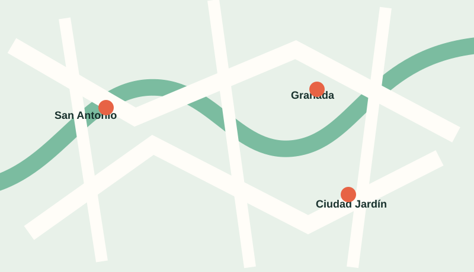
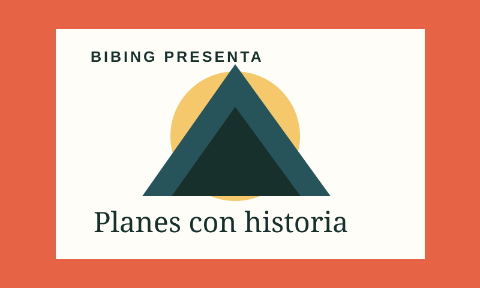

Para asistentes
Permite buscar por interés, revisar datos antes de salir y guardar los planes que llaman la atención.
- Información breve y ordenada.
- Filtros por categoría y zona.
- Agenda personal en el navegador.
Sobre Bibing
Bibing es una propuesta web para centralizar información básica de actividades cercanas y hacer más sencillo comparar alternativas.

Permite buscar por interés, revisar datos antes de salir y guardar los planes que llaman la atención.

Ofrece un formulario sencillo para publicar una actividad con datos suficientes para que otras personas la entiendan.
Ejemplo de información visible
| Hora | Actividad | Ubicación |
|---|---|---|
| 4:00 p. m. | Apertura y muestra local | San Antonio |
| 6:00 p. m. | Presentación principal | Teatro al aire libre |
| 8:00 p. m. | Cierre del evento | Zona gastronómica |